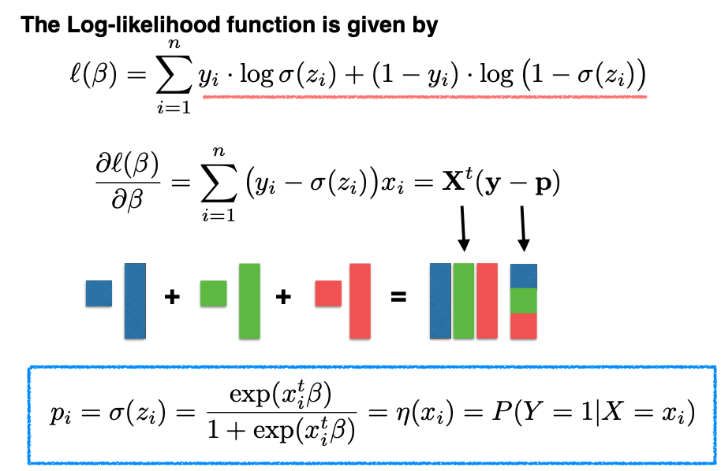
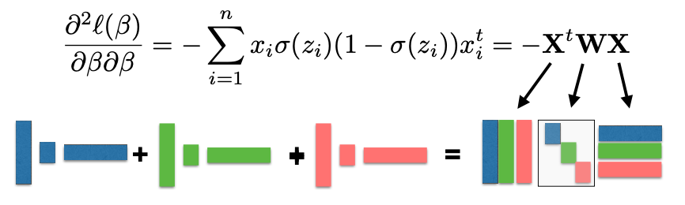
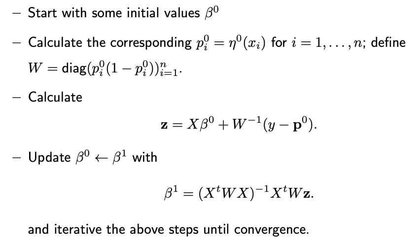

10.2. MLE
Let’s start with is the Logit of \(\eta\):
Then express \(\eta\) and \(1 - \eta\) in terms of \(\beta\):
We unify the expressions above for both Y=1 and Y=0 into a single form, using the sigmoid function, denoted as \(\sigma(z) = e^z / (1 + e^z),\) where \(z\) is shorthand for \(x^t \beta\).
Next, we need to find the maximum likelihood estimate (MLE) for \(\beta.\) We follow the standard approach of setting the gradient of the log-likelihood with respect to \(\beta\) to zero and solving for \(\beta.\)
{kind=link}
However, this solution is not in closed form, so we use an iterative algorithm, known as the Newton-Raphson algorithm, to find the root of the derivative.
During this iterative process, we also need to calculate the second derivative of the log-likelihood, which forms a matrix known as the Hessian matrix. The Hessian matrix is negative semi-definite, indicating that the log-likelihood function is concave. This property simplifies optimization, as any local maximum is also the global maximum.
{kind=link}
The MLE can be obtained by the following Reweighted LS Algorithm:
{kind=link}